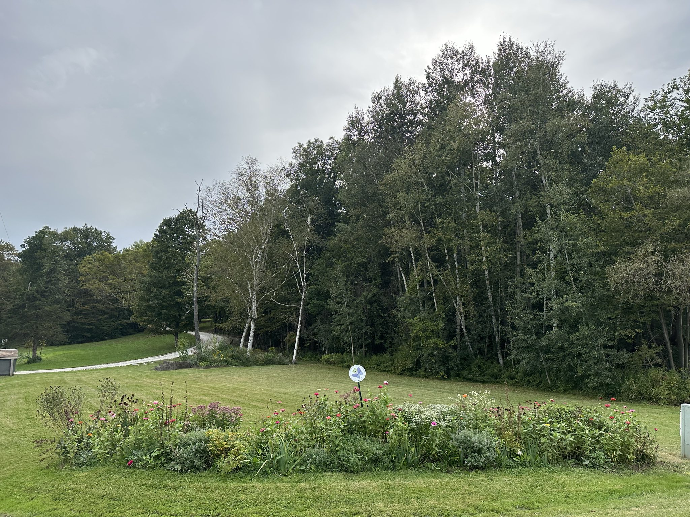
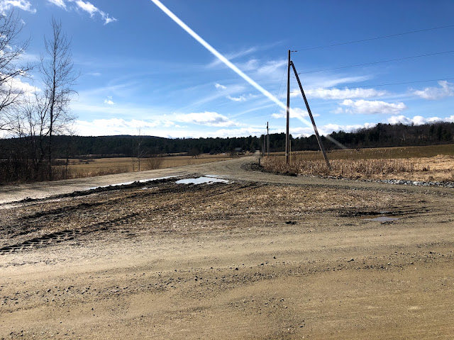

Garden Profile
The Butterfly Garden at Quaker’s Corners

The Butterfly Garden at Quaker’s Corners/Lewis Creek road began as an idea to bring back the Cloudless Sulphur to Lewis Creek rd in Charlotte, Vermont. The garden resides on the corner of Roscoe rd and Lewis Creek rd on private property. This project is a collaboration between neighbors who are concerned about our local pollinator population. We established this garden together with the support of Ernie Pomeleau, Red Wagon Plants, and Ward Preston LLC.
Plants (to name a few):
Baptisia Australis (False Indigo)
Echinacea purpurea (purple coneflower)
Iris germanica (bearded iris)
Lobelia cardinalis (cardinal flower)
Lupine
Nepeta (catmint)
New York Ironweed
Monarda didyma (bee balm)
Physotegia virginiana (Obedient Plant) E
Pycnanthemum pilosum (Mountain Mint)
Rudbeckia hirta (black-eyed susan)
Senna
Shrubs:
Cephanlanthus occidentalis (buttonbush)
Bulbs:
Galanthus
Before
